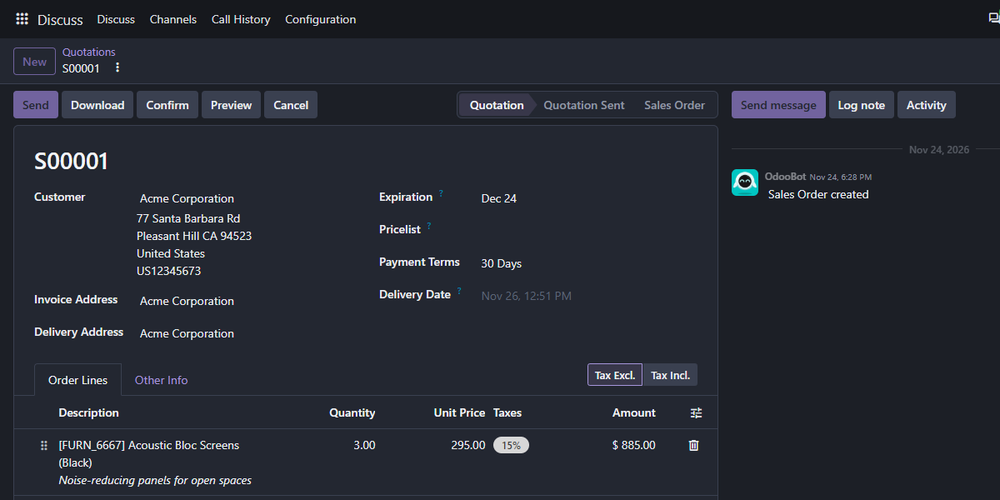
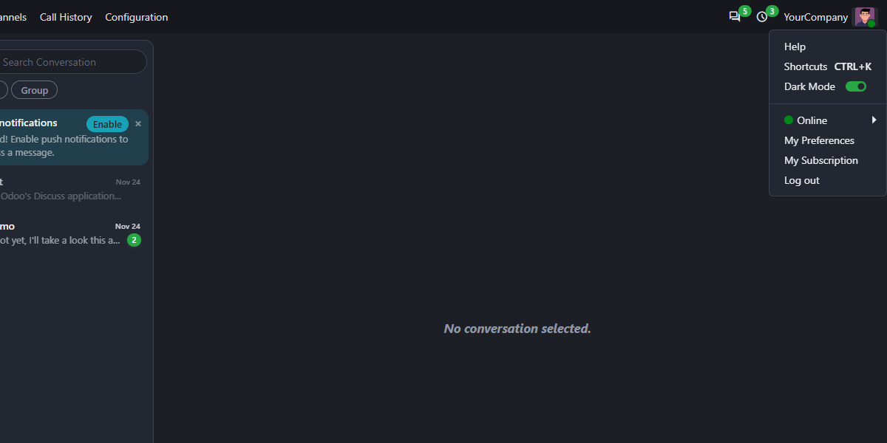
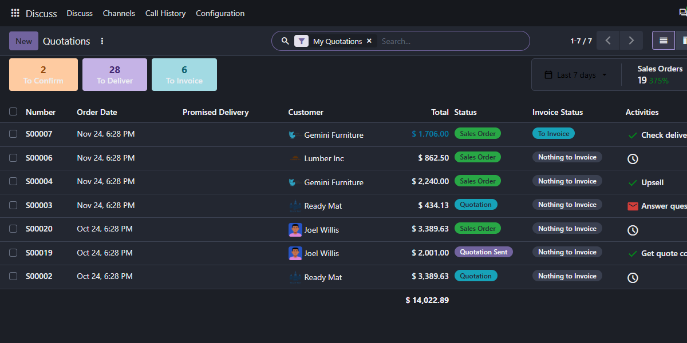

Open the user menu (your avatar, top right) and turn on Dark Mode. The page reloads in the dark theme. Each user chooses for themselves; the choice is kept in the browser.
No settings, no configuration, nothing to install on the server besides the module.

Odoo already contains a dark stylesheet bundle and its own dark rules for the calendar, date picker and other parts; Odoo Community just has no way to turn it on. This module adds the switch and a dark colour palette (backgrounds, greys, text, links and the top bar) on top of Odoo's own styles, so lists, forms, kanban, calendar, settings and Discuss all follow.
